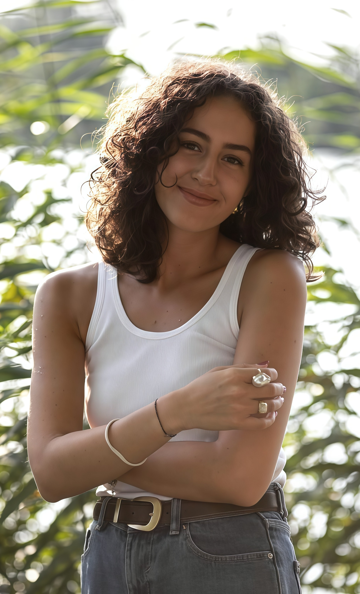
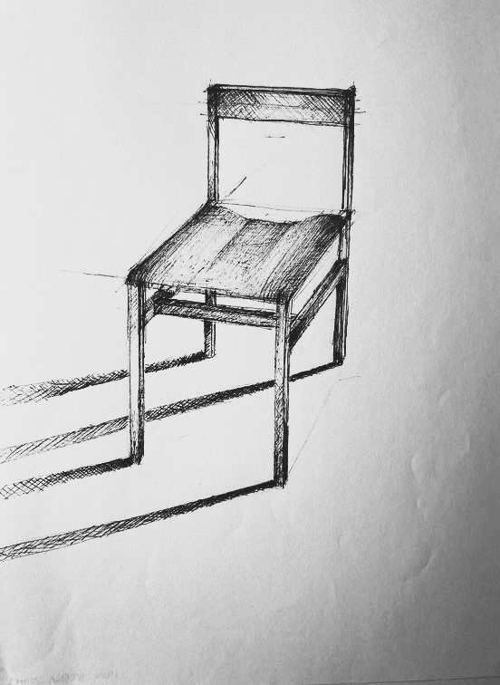
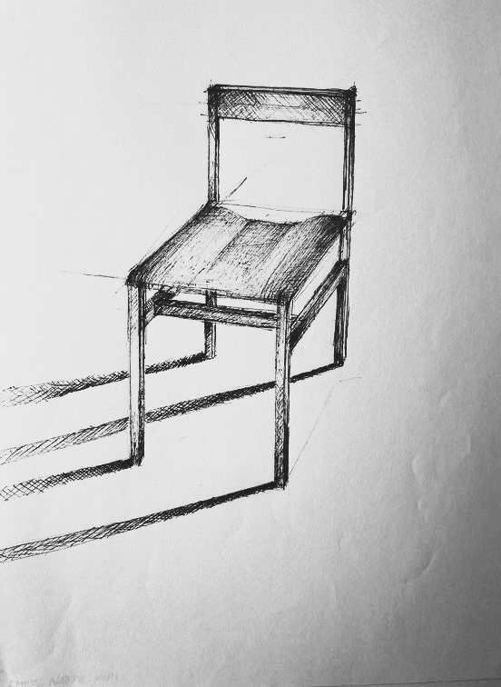

Soy Borbála, una joven de 23 años de Hungría, graduada de la Universidad Técnica de Budapest (BME) y actualmente en búsqueda de oportunidades profesionales en España. Aunque mi formación es más técnica, me apasiona combinar lo artístico y lo técnico. Me considero una persona emotiva, lo que me permite comprender mejor a los usuarios y crear soluciones más empáticas y funcionales. Disfruto trabajar en equipo, ya que valoro la colaboración y el intercambio de ideas. Además, soy muy detallista y creo que la atención a los pequeños aspectos del diseño marca la diferencia. Hablo inglés y español con fluidez, además de mi idioma natal, el húngaro, lo que me permite adaptarme fácilmente a entornos internacionales y multiculturales. Siempre busco aprender y adaptarme para seguir creciendo a través de nuevos retos y oportunidades.

 
